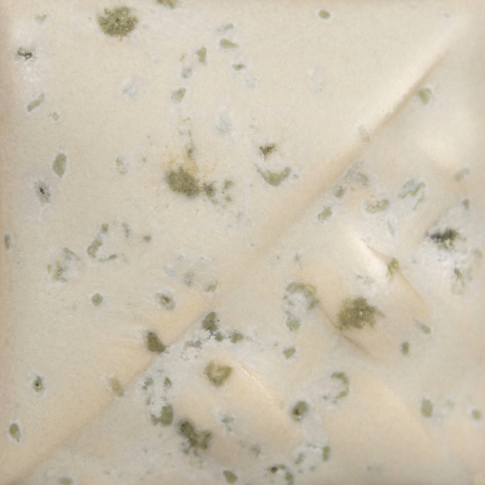
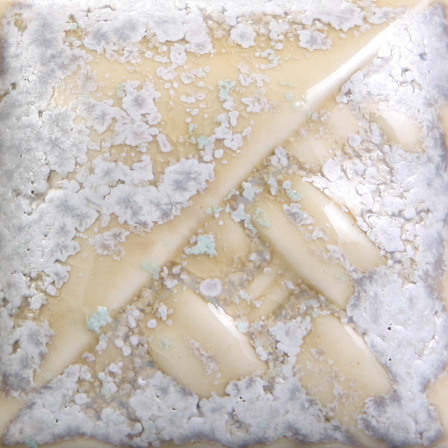

Commercial
Mayco SW-118 Sea Salt
A white matte crystal glaze that blooms sage-to-mint green as the crystals melt, producing a foamy textured surface that reads closer to soda or salt accretion than a flat studio matte.
Mayco
Stoneware Crystal Glaze
Cone 6-10
Effect
Finish tags: matte, crystal, foamy, textured
Effect tags: salt-look, green blooms, surface expansion, layerable
Atmosphere: oxidation
Use Notes
Application: Mayco says the crystals settle and need strong mixing before first use plus re-stirring between coats. For a lighter crystal effect, the brand suggests two coats of SW-106 Alabaster under one coat of Sea Salt.
Food safe: Yes
Sources: mayco-sea-salt


Notes
This is a strong commercial salt-track candidate when the goal is texture and bloom rather than literal orange-peel vapor history.
- The Alabaster-under-Sea-Salt stack should be part of the first commercial grid.
- Vertical orientation matters because the crystal movement is part of the visual read.